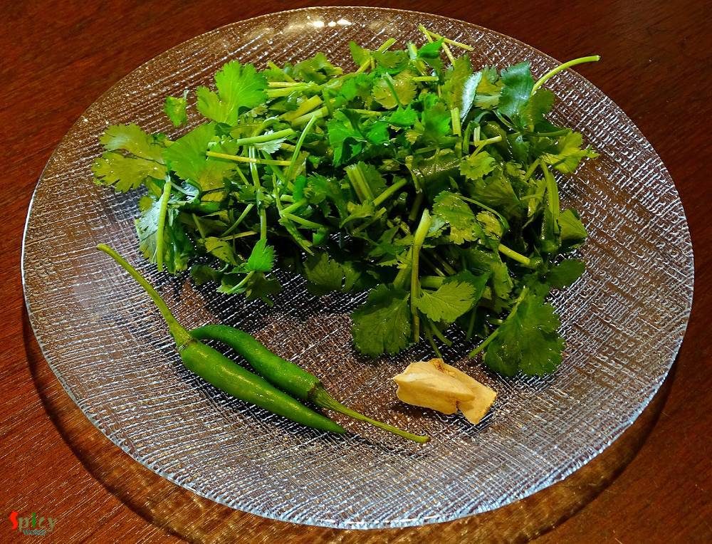
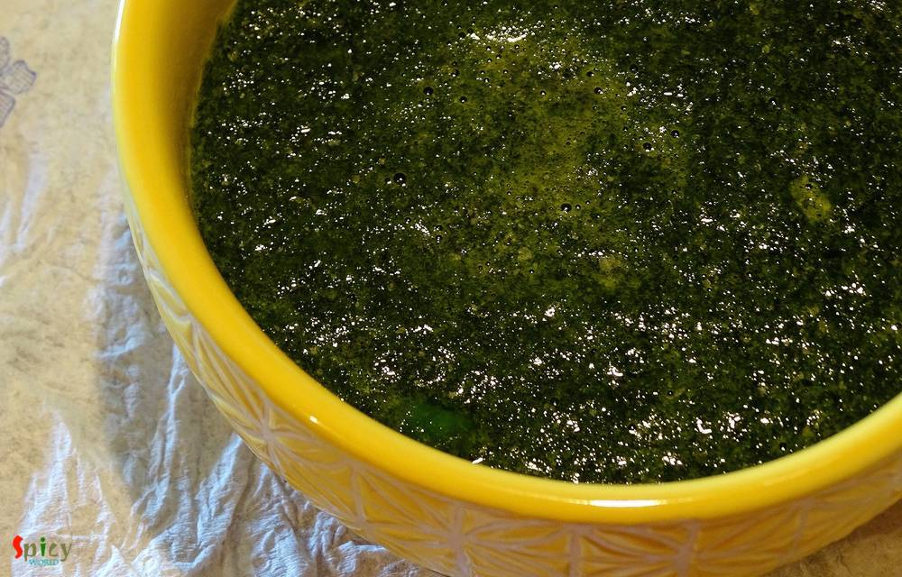
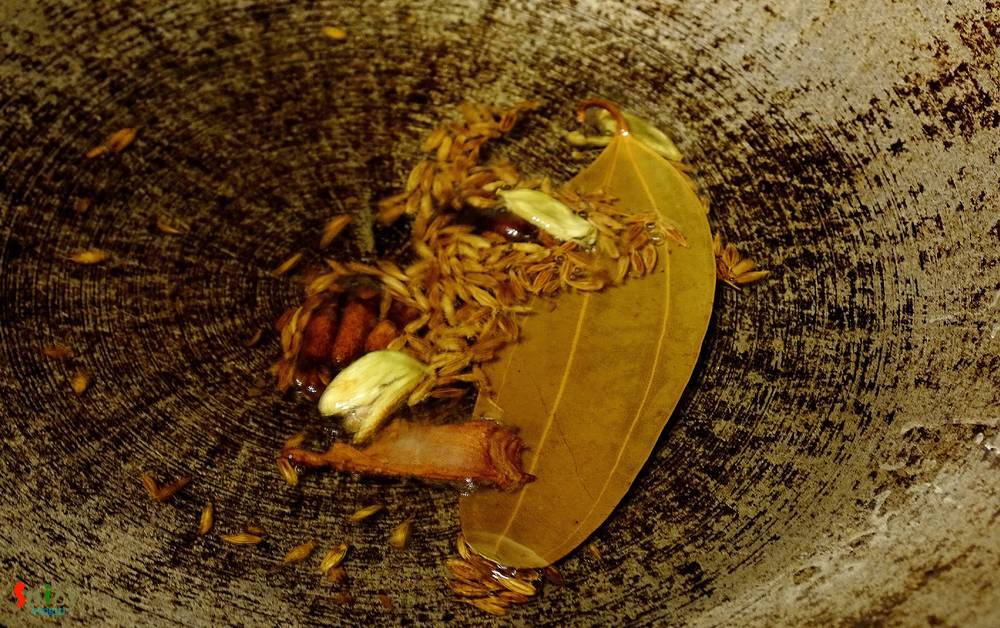
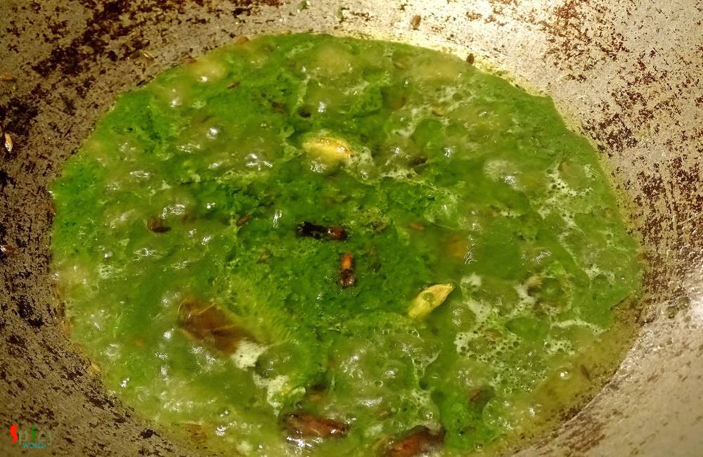
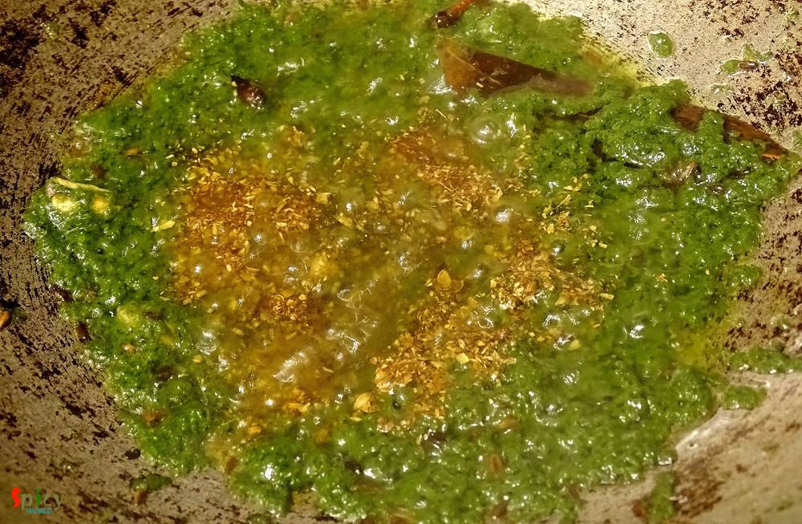
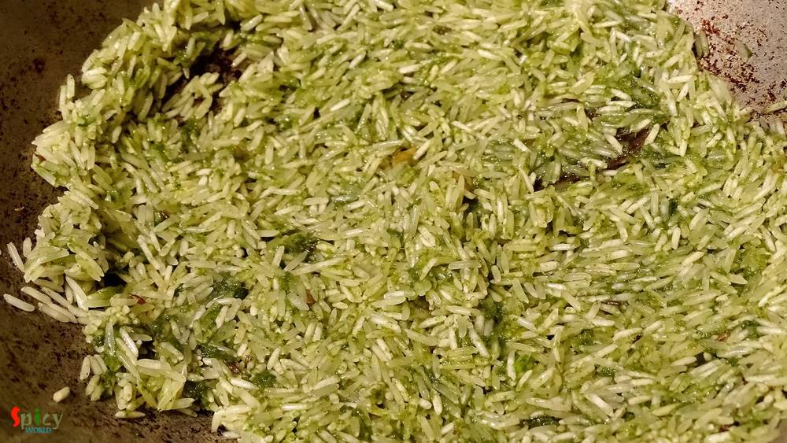
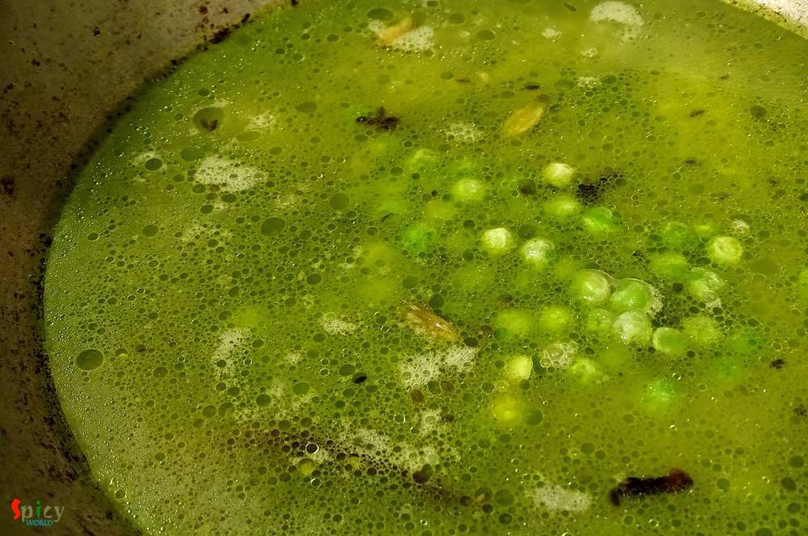
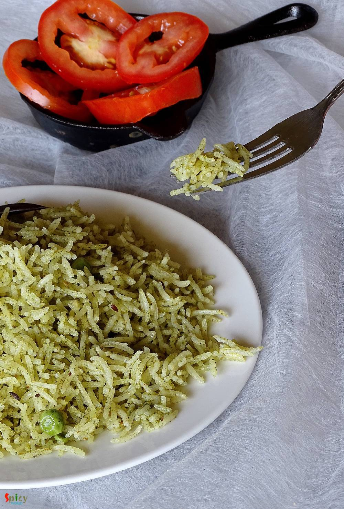

Simple and Easy Recipes
Hara Pulao / Green Rice Pilaf
© 2016 Spicy World, Published on: May 11, 2016
'Pulao' plays a very significant role in Indian cuisine. Our cooking is mostly based upon 'curry' / gravy version which goes best with pulao. Their relationship is like - 'behind every tasty curry, there is a pulao' ... ☺️☺️ You can never underestimate it because sometimes 'pulao' itself can be very rich and attractive like 'yakhni pulao', 'prawn pulao', 'sweet pulao' and so on. Today I am sharing the recipe of 'hara pulao' which is the easiest and tastiest one. I flavoured the rice with a spicy green coriander paste and that's why the taste was damn good ! Try this easy recipe in your kitchen and let me know how it turns out for you.

Ingredients
- 1 cup of long grain basmati rice.
- A bunch of coriander leaves.
- 1 Teaspoon of chopped ginger.
- 2 green chilies.
- 1/4 th cup of half boiled green peas.
- 1.5 Teaspoons of roasted coriander powder.
- Whole spices (2 green cardamom, 1 small cinnamon stick, 1 Teaspoon of cumin seeds, 4 cloves, 1 bay leaf).
- Salt and sugar.
- 3 Tablespoons of oil.
- Water.


Steps
Put the coriander leaves, ginger and green chilies in a blender with very little water.
Blend them to a smooth paste.
Pour the green paste in a bowl and keep aside.
Now heat oil in a pan.
Add all the whole spices in hot oil. Sauté for few seconds.
Then add that prepared green paste into the hot oil.
Cook until the water evaporates.
Then add the roasted coriander powder. Mix well.
Wash the rice with water and add in the pan. Mix gently.
Now add 2 cups of water, enough salt (water should tastes like sea water), pinch of sugar and green peas. Mix well.
First bring the flame to high, let the water boil.
When the water starts boiling, bring the flame to low, cover the pan and cook for 20 minutes.
After that, open the cover, give a gentle mix. Then turn off the heat and let it rest for 15 minutes with cover.
Your hara pulao is ready ...
Enjoy this hot with some raita or pickle ...
")